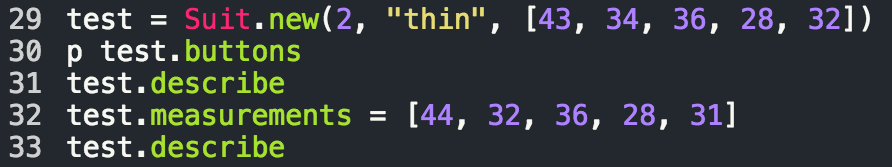

Getting Classy
When a Method Just Doesn't Cut It
Friday, June 19, 2015
Good day, afternoon, or evening, good Sir or Madam, and welcome to this classy rendition of James' blog. Here you will find only the finest bespoke Ruby Classes created and described for your enjoyment, entertainment, and education. What you will not find here, are any sentences that run on quite as long as that first one. Nor am I likely to keep up any overly formal tone for much longer than that. Nevertheless, I will be going over creating a Class in Ruby and to do so I will use a simplified class named Suit. Let's jump right in and lay out the class!
First, those are not my measurements, they are relatively standard measurements for a men's medium. Second, that a lot of code! What's going on? Let's break it down, shall we? We will start with the first chunk of code, talk a bit about it, then move on, working our way to the end.
The first line here is an easy one. It starts the definition of our Suit class. The next few lines are a little trickier. Let start with line 4. On this line we are making sure that the variables buttons and lapel are available outside of the class itself. You'll see a little more about this in a minute. Just above that, we are doing something similar with the variable measurements but not only are we making them readable outside of the class, we are making it so that it can be changed from outside of the class! This can be both useful and potentially risky, if you're not careful. Finally, line 5 is setting a constant containing our dear user's measurements for use in our suit class (another thing we will look at a bit more soon). Moving right along...
Now you might be thinking, "James, is that really as boring as it looks?" To which I would reply, absolutely...just, absolutely. Becasue, it is. So, this might not be the flashiest code you're likely to see in your lifetime, but that doesn't mean it isn't important. What we have going on here is the initialization method which is what is run when a new instance of this class is created. New instances of our Suit class will expect at least two arguments: the number of buttons the suit has, and the lapel style. Optionally, if the suit isn't already tailored, the suits measurements can be passed in as an array. Otherwise, our constant MY_MEASUREMENTS from before is put in as the new suit's measurements. One other thing worth noting, do you see the @ before the variable names? That calls attention to the fact that these are instance variables. Each instance of the Suit Class will have its own set of these variables specific to itself. These variables will also be accessibile by any other methods within the class, not just the initialize method where they were assigned.
I'm not going to go into that next block of code for a couple of reasons. One, it would make this already scrolling-heavy blog even moreso, and two, it's just a method for displaying some information about whatever suit we made. What I will say about it though is this, methods make the Class. A class with no methods is...well...not the most useful thing in the world. You are most likely making a Class in the first place because you have something you want to create that can be created complete with a whole slew of methods already known. What I will show you though, is how we can use that method when we create a new instance of our Suit Class!

WHat a great new suit you have! I've heard test suits are just the best! Seriously though, please excuse the name. Anyway, on line 29 we create a new instance of our Class and name it test. We pass test a value of 2, "thin", and an array of measurements. These are put into the buttons, lapel, and measurements variables accordingly. Line 30 shows how you can call on a variable that was set up with attr_reader. This will display 2 in the terminal thanks to the preceeding p. Skipping to line 32, you can see that by setting up measurements with attr_accessor, not only could we call it like we did buttons, but we can alter it's value for test with something that looks just like assignment syntax. Now, I said I wanted to spare you too much more scrolling, and I mean to, but if you are interested in the output of the describe calls, I will post them at the end. So, you are more than welcome to stop reading now. You can hopefully leave this post at least slightly classier than when you came upon it. Now go forth, and make some Classes!